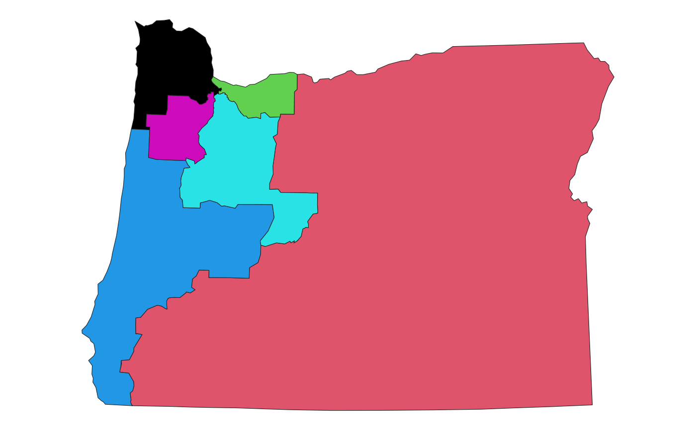

Identifies relevant census places and plots them.
Usage
geom_places(
mapping = NULL,
data = NULL,
position = "identity",
na.rm = FALSE,
state = NULL,
show.legend = NA,
inherit.aes = TRUE,
...
)
stat_places(
mapping = NULL,
data = NULL,
geom = ggplot2::GeomSf,
position = "identity",
na.rm = FALSE,
state = NULL,
show.legend = NA,
inherit.aes = TRUE,
...
)Arguments
- mapping
Set of aesthetic mappings created by
ggplot2::aes()- data
The data to be displayed in this layer
- position
Position adjustment
- na.rm
if
TRUE, will silently remove missing values from calculations- state
state to use. Guesses based on overlap if not provided.
- show.legend
Should this layer be included in the legends?
- inherit.aes
If
FALSE, overrides the default aesthetics, rather than combining with them.- ...
Passed onto the underlying geoms.
- geom
The geometric object to use display the data
Examples
library(ggplot2)
data(oregon)
ggplot(oregon, aes(group = cd_2020)) +
geom_district() +
stat_places(state = 'OR') +
theme_map()
#> Warning: Computation failed in `stat_places()`.
#> Caused by error in `loadNamespace()`:
#> ! there is no package called ‘tinytiger’
ggplot(oregon, aes(group = cd_2020)) +
geom_district() +
geom_places(state = 'OR') +
theme_map()
#> Warning: Computation failed in `stat_places()`.
#> Caused by error in `loadNamespace()`:
#> ! there is no package called ‘tinytiger’
